The foods on this shelf are low in calories and contain fibre which aids digestion.
They provide many important vitamins and minerals.
Choose 5 -7 servings a day.
The foods in this shelf can help control body weight as part of a healthy lifestyle
and contain nutrients that protect against heart disease and cancer.
Enjoy a variety of coloured fruit and vegetables to benefit from the different minerals
and vitamins each contains. Oranges, strawberries or kiwifruit are rich in vitamin C which aids iron
absorption.
Most fruit and vegetables are fat free.
| 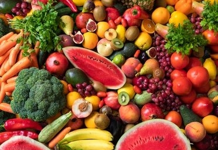 | 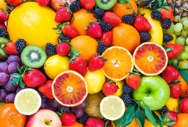 | 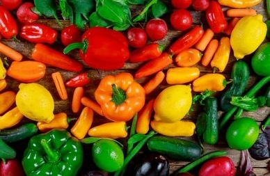 | 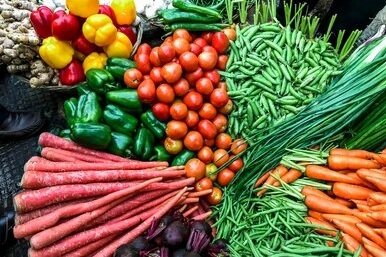 | seasonal | fruit | vegtable | seasonal_vegtable |
Healthy Eating Tips
Base your meals on vegetables,
salad and fruit. Add salad vegetables to sandwiches.
Limit fruit juice to once a day with a meal and always choose unsweetened.
Choose fruit and raw vegetables such as chopped carrots as tasty, healthy snacks.
Add vegetables to stir-fries, stews and curries – the more vegetables the better.
Wholemeal cereals and breads, potatoes, pasta and rice
The foods on this shelf are the best energy providers for your body.
Choose 3 to 5 servings a day.Up to 7 servings for teenage boys and men aged 19–50.
Very active people will need more.
Wholegrain choices contain fibre to help your digestive
system and can protect against bowel diseases. Wholemeal breads, cereals and potatoes provide the best
energy for the body to work. The amount of energy you need depends on your physical activity levels. Adults
watching their weight will need less. The number of servings you need depends on age, size, if you are a man or
a woman and on activity levels.
| 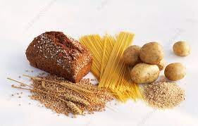 | 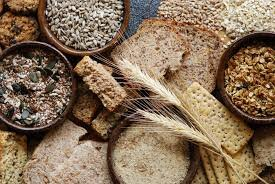 | 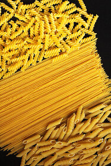 | 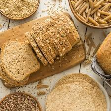 | potatoes | wheat | pasta | bread |
Healthy Eating Tips
Choose a variety of foods from this shelf every day.
Try using brown rice and wholewheat pasta and check your portion guide.
Milk, yogurt and cheese
Calcium found in dairy foods is important for bone health and especially during the teenage growth spurt.
Vitamin D helps absorb calcium better. The Irish diet is low in vitamin D – talk to your pharmacist or doctor about taking a supplement.
Low fat options provide the same amount of calcium and other nutrients with fewer calories and saturated fat.
All foods from this shelf are a good source of calcium, protein, vitamin B12, riboflavin and vitamin A.
| 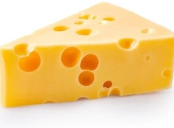 | 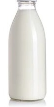 | 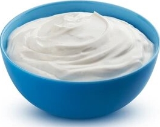 | cheese | milk | greek yogurt | yogurt |
Healthy Eating Tips
Choose reduced-fat or low-fat varieties.
Choose low fat milk and yogurt more often than cheese. Milk on cereal can be a good
way to reach 5 servings a day if aged 9 to 18 years. Some yogurts and yogurt drinks
can have added sugar. Check the label.If choosing dairy alternatives such as soya milk and yogurts,
choose those with added calcium.
Meat, poultry, fish, eggs, beans and nuts
The foods on this shelf provide protein for growth and repair.
They are also the main source of iron for healthy blood.
Choose 2 servings a day.
Lean red meat is a good source of iron.
Chicken, turkey and fish are good low-fat options. Oily fish provides essential omega 3 fats.
Beans and eggs are good sources of protein and are low in fat.
They are a good choice for meat free days.
Limit processed salty meats such as sausages, bacon and ham – not every day.
| 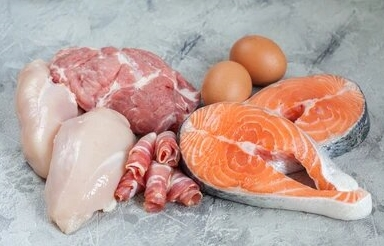 | 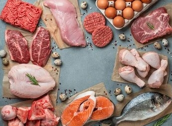 | 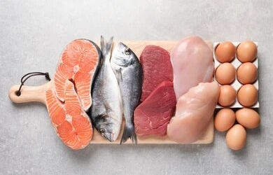 | 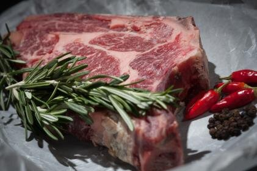 | raw protein | fresh protein | healthy protein | tender steak |
Healthy Eating Tips Base your meals on vegetables, salad and fruit. Add salad vegetables to sandwiches. Limit fruit juice to once a day with a meal and always choose unsweetened. Choose fruit and raw vegetables such as chopped carrots as tasty, healthy snacks. Add vegetables to stir-fries, stews and curries – the more vegetables the better.
Foods and drinks high in fat, sugar and salt Most people consume snacks high in fat, sugar and salt and sugar sweetened drinks up to 6 times a day (Healthy Ireland Survey 2016). There are no recommended servings for this shelf because they are not needed for good health. These foods have little nutritional value and may cause obesity which can lead to heart disease, type 2 diabetes and some cancers. Many processed foods like cakes, biscuits and confectionery contain high levels of added sugars and can be high in calories. Eating too much salt can lead to raised blood pressure, which triples your chances of developing heart disease and stroke. Many processed foods like takeaways and ready meals are high in fat and can be harmful to heart health.
| 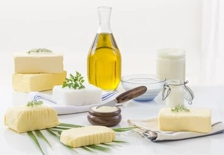 | 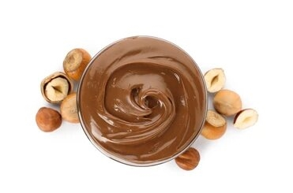 | 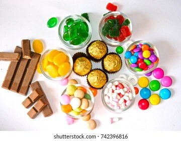 | 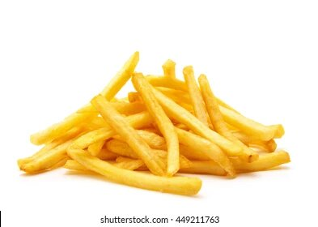 | butter & oil | spread | candy | fries |
Healthy Eating Tips Limit foods and drinks high in fat, sugar and salt to sometimes – not every day. Choose smaller amounts or fun-size servings. Limit chips and takeaway food as much as possible – most are very high in fat, salt and calories. Choose healthy snacks such as fruit and vegetables. Drink water instead of sugary drinks.
Serving Size Guide
1 serving
Cereals, cooked rice and pasta
Use a 200ml disposable plastic cup to guide portion serving size.
Reduced fat spread Portion packs of reduced fat spread found in cafes can guide the amount you use.
One should be enough for two slices of bread.
Vegetable, salad and fruit
Use a 200ml disposable plastic cup to guide portion serving size.
Oils Use one teaspoon of oil per person when cooking or in salads. cup dry porridge oats or ½ cup unsweetened muesli 1 cup flaked type breakfast cereal 1 cup cooked rice, pasta or noodles Apple, orange, pear or banana 1 Plums, kiwis or mandarin oranges 2 Strawberries 6 Grapes 10 Raspberries 16 Cooked vegetables – fresh or frozen ½ cup Salad – lettuce, tomato, cucumber 1 bowl
Meat, poultry and fish
The palm of the hand, width and depth without
fingers and thumbs, shows how much meat, poultry and fish you need in a day. Lean beef,
lamb, pork, mince or poultry 50–75g cooked (half size of palm of hand) Cooked fish 100g
Cheese
Use two thumbs, width and depth to guide portion size.2 thumbs (25g) of hard or semi-hard cheese such as cheddar or edam 2 thumbs (25g) soft cheese such as brie or camembert 2